本サイトでは文字列に関する木構造をいくつか紹介しています。中でも接尾辞木 (Suffix Tree) は文字列データ構造の中で最強と言えるため、必ず理解しておく必要があります。
本記事では Suffix Tree の構築方法を \(2\) つ紹介します。特に、push_back しながら構築する方法は、Palindromic Tree を構築する方法と似た部分がありますので、本記事を理解できなければ Palindromic Tree の記事を参照してみると良いです。
push_back でオンライン構築する方法 (Suffix Array/LCP Array 不要)
接尾辞木(Suffix Tree) という最強データ構造を構築します。ある文字列 \(S\) の部分文字列の種類数は \(O(|S|^2)\) 個ですが、Suffix Tree は \(S\) の区間の参照をうまく木構造に乗せることで、\(O(|S|)\) words の空間計算量で実質的に \(S\) の全ての種類の部分文字列に相当するデータを列挙できます。
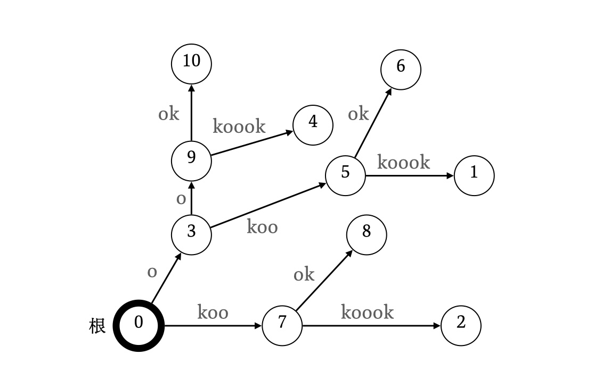
構築の計算量も \(O(|S|\log{\sigma})\) 時間 (\({\sigma} :=\) アルファベットサイズ) と高速なため、\(S\) の部分文字列に関する計算を行う問題ではまず Suffix Tree を考えることが有効です。実際 ABC268-Ex (2560 diff) や Library Checker の Longest Common Substring は、考察が難しい部分を Suffix Tree で表現することができ、いとも簡単に解けてしまいます。
後に述べますが、Suffix Array と LCP Array さえあれば Suffix Tree の構築自体はそこまで難しい話ではないです。本記事では、簡単な Suffix Tree 構築アルゴリズムと、Suffix Link と push_back を用いた Suffix Tree 構築アルゴリズムを紹介します。
Suffix Tree の構築に関しては、\(2\) 章と \(3\) 章で異なる構築方法を示しますが、基本的に \(3\) 章で示すものの方が強いです。ただしその分若干実装が大変です。
文字列 \(S\) の接尾辞を全て格納した Trie を考えます。以下の図は \(S =\) okookoook の例です。青色で示された終端ノードが、接尾辞を格納したデータを示します。
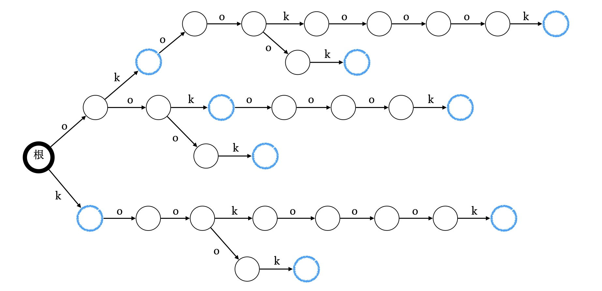
この図を見ると、文字列長に対して頂点数が多いことがわかります。Trie の頂点数は \(O(格納している文字列サイズの和)\) 個なので、\(S\) の接尾辞を全て格納すると頂点数は \(O(|S|^2)\) になってしまいます。また、辺ラベルの文字数も同様に \(O(|S|^2)\) です。
そこで、この Trie で圧縮可能な辺を全て圧縮したものを構築します。具体的には、根以外ので「出次数がちょうど \(1\)」の頂点を削除し、その頂点に繋がれた辺を連結して \(1\) つの辺にする操作を繰り返します。
このようにすることで余分な頂点と辺がなくなりました。また、複数の辺にまたがっていた文字ラベルが、一つの辺の文字列ラベルに圧縮されたことがわかります。ただし Trie で終端ノードだったものも圧縮されており、接尾辞に対応するデータが辺ラベルの途中の位置に存在することもありますが、論理的には問題ありません。
上記の木では頂点数は \(2|S|\) 以下であることが言えます。この木の葉頂点は全て \(S\) の接尾辞に対応しており、またその葉の親頂点より上は他の葉頂点とパスを共有しています。よって \(S\) の接尾辞 \(1\) を格納するのに必要な頂点は、高々 \(1\) つの葉頂点と高々 \(1\) つの分岐点の合わせて \(2\) つ以下とわかります。
頂点数を \(O(|S|)\) に削減することができましたが、依然として辺ラベルの文字数は \(O(|S|^2)\) のままです。辺ラベルの文字列は \(S\) の部分文字列であることに注目して、これらの辺ラベルを参照に置き換えます。参照に必要なデータは、\(S\) 上の半開区間を表す \(2\) つの整数のみなので、上記の木は以下になります。
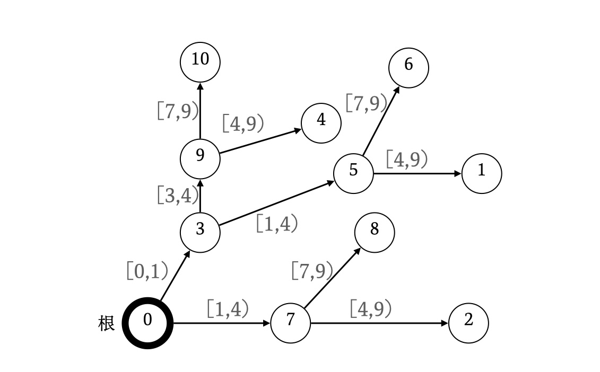
これによって、冒頭に示した Trie を \(O(|S|)\) words のデータ構造に圧縮することができました。この木を接尾辞木(Suffix Tree)と言います。この章では、Suffix Tree をオフラインで構築する方法を説明します。
Suffix Tree は隣接リストで表現可能な木構造ですが、Trie と同様に辺ラベルから隣接頂点を求める索引を持つ必要があります。また構築中に使用したり、様々な問題を解くために使用するデータもあるので、各頂点には以下のようなデータを持たせる必要があります。以下のメンバを持つオブジェクトを Node クラスとして定義します。
parent := 親頂点
child[x] := この頂点から出る辺のうち、辺ラベルの先頭が x の辺の先にある頂点
label.first := この頂点に入る辺のラベルの参照 (半開区間の左端)
label.second := この頂点に入る辺のラベルの参照 (半開区間の右端)
path_label_length := 根からこの頂点までの辺ラベルの文字数の和
suffix_id := この頂点が対応する接尾辞が \(S\) の何文字目から始まるか。接尾辞に対応しない場合は \(-1\) とする。
prod_data := この頂点以降の部分木に関する集約データ
prod_op := この頂点以降の部分木に作用する遅延評価
また、Suffix Tree 上の位置を示すデータを以下の形式で定義します。Suffix Tree では辺の途中の位置を示す必要があるので、以下のデータで定義します。
これらのデータを定義することで、Suffix Tree の表現と、Suffix Tree 上の操作を定義することができるようになります。のちに説明しますが、Suffix Tree 上の位置データは文字列 \(S\) の \(1\) 種類の部分文字列と一対一対応しています。
静的な Suffix Tree 構築では、Suffix Array と LCP Array が必要になります。これらの構築自体も難しい問題ですが、これらは一般的によく知られているため、ここでは詳細は割愛して定義のみ説明することにします。
文字列 \(S\) に対する Suffix Array SA を以下で定義します。
SA[i] := \(S\) の空文字列を含む接尾辞のうち、辞書順で \(i\) 番目に小さいものの、\(S\) における開始 index
文字列 \(S\) に対する LCP Array LCP を以下で定義します。
LCP[0] = 0
LCP[i] := SA[i-1] と SA[i] が表す \(2\) つの接尾辞の最長共通接頭辞(先頭何文字が一致しているか)
これらはどちらも線形時間で構築することができます。また、push_back によるオンライン構築ではこれらの列は不要であり、構築した Suffix Tree から逆にこれらを構築することもできます。
まず、\(S\) の接尾辞を \(1\) つずつ木に格納する実装を考えます。
何も格納されていない初期状態では、根頂点のみが存在します。接尾辞の格納では、Trie と同様に既存の辺を共有する位置まで移動し、共有できない部分があれば分岐させて新たな葉を追加します。
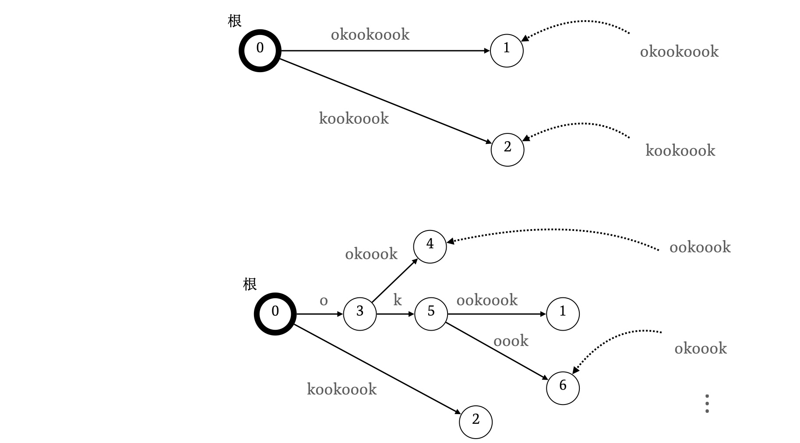
この処理では必要なデータの項で用意したものを活用します。例えば、上の図で ookoook を格納する際は、位置 \((0,5,1)\) に頂点 \(3\) を作成し、新たにできた頂点 \(3\) の影響を受ける部分のデータを再計算します。
しかし、このままでは共有する位置まで移動するのに毎回 \(O(|S|)\) 時間かかるため、全体で \(O(|S|^2)\) 時間かかってしまいます。結論から言うと、接尾辞の辞書順に接尾辞を格納することで、木上の移動を工夫することができます。
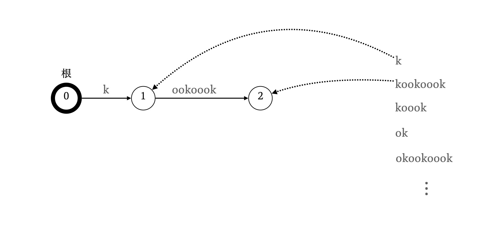
上図は接尾辞の辞書順に接尾辞を格納する様子ですが、これだけを見ると何も工夫がないように見えます。しかし、実はこの順で格納する場合、共有する位置は一つ前に格納した接尾辞との LCP に対応します。\(S\) のある接尾辞 \(\mathrm{sf}\) は、\(S\) の Suffix Tree において他の接尾辞と辺を共有しますが、辞書順の定義より、この時共有する辺の長さは Suffix Array において \(\mathrm{sf}\) と隣り合う接尾辞との LCP の長さに一致するからです。
なお、接尾辞の辞書順は Suffix Array で定義されており、計算に必要な LCP は LCP Array で計算されています。また Suffix Tree 構築中は、最後に格納した接尾辞の位置(頂点)を記録しておく必要があります。
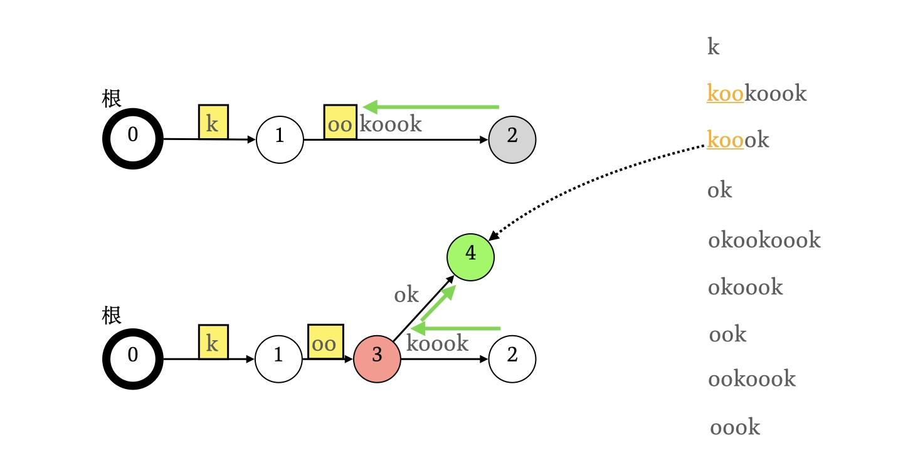
\(i\) 回目の格納操作では LCP[i] まで移動する必要があります。まず、最後に格納した SA[i-1] に対応する頂点から、親頂点への移動を繰り返すことで、対応する文字列の長さが LCP[i] の長さ以下である頂点 まで移動します。上図の例では、最後に格納した頂点 \(2\) から、koo 以前の頂点である頂点 \(1\) まで移動します。
移動後の頂点を \(x\) とすると、\(x\) に対応する文字列の長さを参照することで LCP[i] の位置までの残りの文字列を復元することができます。この時、LCP[i] に対応する位置は頂点 \(x\) から出る辺上、もしくは頂点 \(x\) そのものであり、LCP[i] までの残りの文字列の情報を参照することで LCP[i] の位置を \(O(1)\) 時間で復元することができます。
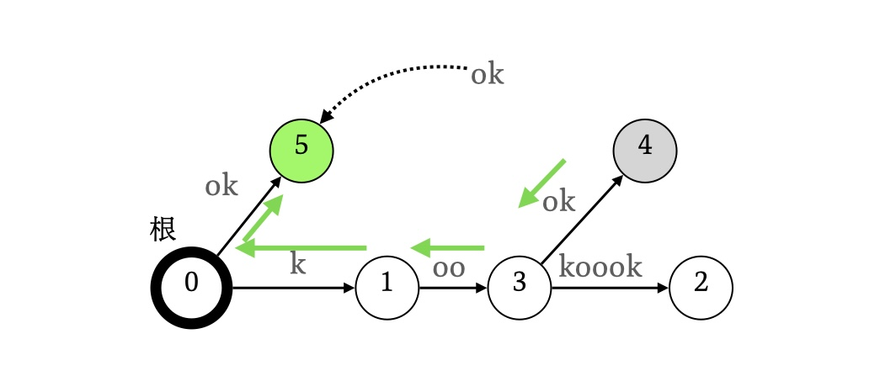
親頂点への移動も LCP[i] までの移動も、辺上の位置を \(1\) 文字ずつ移動するのではなく、目的の位置まで一気にジャンプします。これは位置データ \((u,v,p)\) の定義から \(O(1)\) 時間で実行可能であることがわかります。
この手続きを続けた時、移動経路は最終的に以下のようになります。
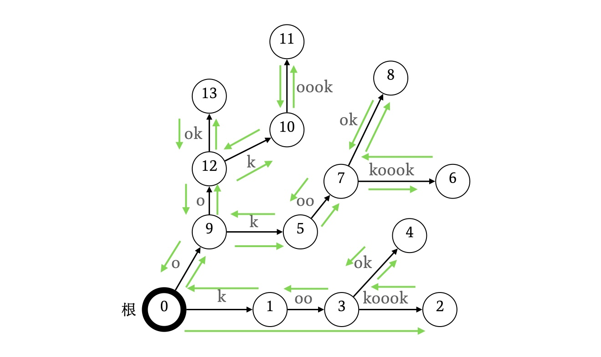
皆さんお気づきかもしれませんが、この移動経路は構築済みの Suffix Tree で辺ラベルの辞書順で DFS を行った際の移動経路と一致します。木上の DFS の計算量は \(O(頂点数)\) 時間なので、この構築方法の計算量は \(O(|S|)\) 時間です。
これにてめでたく Suffix Tree が完成したわけですが、冒頭の説明で説明した Suffix Tree と比較すると、木の形状が異なっていることがわかります。
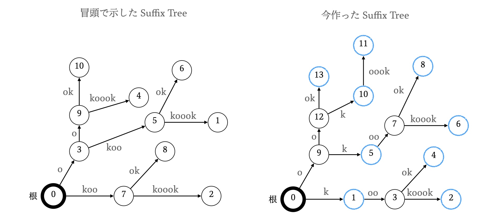
これらを比較すると、今構築した Suffix Tree には、全ての接尾辞に対して、各接尾辞に対応する頂点が存在することがわかります。これは、冒頭で示した Suffix Tree よりも強いデータ構造であると言えます。
ではなぜ冒頭で示したものが存在するのでしょうか。その理由を次の章で説明します。
push_back でオンライン構築する方法 (Suffix Array/LCP Array 不要)
この方法では、文字列 \(S\) に文字を push_back しながら、その影響を \(S\) の Suffix Tree にリアルタイムに反映します。この時、リアルタイム構築中の Suffix Tree が、前章の冒頭で示したものになります。すなわち、構築中の Suffix Tree においては、対応する頂点を持たない接尾辞が存在する可能性があります。しかし構築中の Suffix Tree であっても部分文字列の全列挙は達成されており、部分文字列検索など、補助的なデータを必要としない操作であれば問題なく実行できます。また、これ以上 push_back されないことが確定したタイミングで、Suffix Tree を変形して、各接尾辞に対して対応する頂点を生成することもできます。
改めてですが、Suffix Tree の頂点は何らかの文字列に対応します。先述の構築方法では特筆しませんでしたが、今回の構築方法ではより形式的にデータを表現する機会が多いので、改めて以下を定義します。
上記 \(2\) つは、Suffix Tree に定義したデータによって(論理的に)計算可能です。そして、この方法では次の節で説明する Suffix Link が必須になります。Suffix Link は、2.2.1 項で定義した Node クラスのメンバに追加で定義します。
頂点 \(x\) の Suffix Link として、\(\mathrm{sLink}(x)\) を以下で定義します。
ただし、ここでは空文字列 \(\phi\) も接尾辞に含まれるものとして定義します。すると、全ての文字列は空文字列 \(\phi\) を接尾辞に持つため、全ての頂点からは Suffix Link を辿って根に到達可能であることがわかります。また、Suffix Tree の構築中の手続きの共通化のため、根からは根にリンクしているものとして扱います。
この構築方法では「\(S\) の接尾辞のうち、部分文字列として \(2\) 回以上登場する最長接尾辞」に対応する位置を保存しながら手続きを行います。この位置データを \(F\) として定義します。これから示す手順は全て \(F\) をもとにして行います。
はじめ、\(S\) は空文字列であり、Suffix Tree は空文字列に対応する根頂点のみからなります。また前節で述べた通り、手続きの共通化のために根の Suffix Link は根にリンクしているものとして扱います。
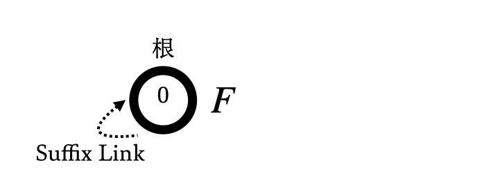
繰り返しますが、この構築では \(S.\mathrm{push\_back}(x)\) を行った結果を Suffix Tree に反映させる方針で構築を行います。\(S.\mathrm{push\_back}(x)\) の影響の反映の形式的な手続きを以下で説明します。形式的なので、飛ばして構築の様子を見ながら参照しても大丈夫です。
Suffix Tree に格納される接尾辞は、Suffix Tree の内部の(葉でない)位置に存在することもあります。\(F\) の定義に注意すると、\(S\) の接尾辞のうち \(\mathrm{label}(F)\) 以降の接尾辞は全て Suffix Tree の内部の(葉でない)位置に存在することがわかります。逆に、\(\mathrm{label}(F)\) よりも長い接尾辞は全て対応する葉ノードを持ちます。
葉ノードに対する影響は、上記に手続き \(1\) の通り、辺ラベルを変更するだけで済みます。これは Suffix Tree に格納されている \(\mathrm{label}(F)\) よりも長い接尾辞への影響を反映したことを意味します。よって残る問題は \(\mathrm{label}(F)\) 以降の接尾辞に対する影響の反映のみになります。
\(S.\mathrm{push\_back}(x)\) の影響で新たな葉ノードができる時、その葉ノードは \(\mathrm{label}(F)\) のいずれか接尾辞に \(x\) を push_back したものに対応します。\(\mathrm{label}(F)\) の接尾辞に push_back(x) したものが葉ノードになるかどうかは、\(\mathrm{label}(F)\) の接尾辞の長さに対して単調性があります。上記の \(2\) と \(3\) の手続きによって、\(\mathrm{label}(F)+x\) の接尾辞を長い順に確認しているのです。\(\mathrm{label}(F)+x\) が葉でない位置にあるなら、それは \(F\) の条件を満たすので、それを新たに \(F\) として手続きを終了します。
はじめ、\(S\) は空文字列であり、Suffix Tree には根ノードのみが存在します。この時 \(F\) は空文字列に対応しており、根ノードすなわち位置データ \((0, \phi, 0)\) を表します。
次に、\(S\) に push_back(o) を行います。\(\mathrm{label}(F)+x\) は Suffix Tree に存在しないので、手続きに従い \(\mathrm{label}(F)+x\) に対応する葉を作成し、\(F\) をそこに移動します。
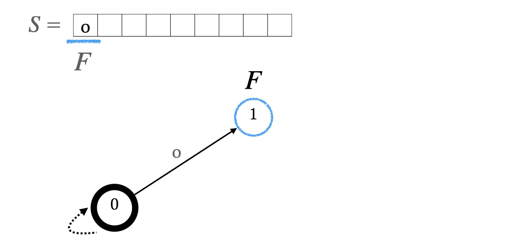
その後手続きに従い、\(F\) を \(\mathrm{label}(F)\) の先頭の文字を削除したものに対応する位置に移動します。今回は根ノードがそれに対応します。
ここで、\(\mathrm{label}(F)\) の先頭の文字を削除したものに対応する位置に移動する方法を説明します。ここでは、\(\mathrm{label}(F)\) の先頭の文字を削除したものに対応する位置を \(\mathrm{next}(F)\) とし、\(F\) の位置データを \((u, v, p)\) とします。
辺の始点のデータは構築済みであるため、辺の始点 \(u\) からは Suffix Link を移動することができます。ここで、\(u\) から \(F\) への移動経路を \(w\) としたとき、\(\mathrm{next}(F)\) は、\(\mathrm{sLink}(u)\) から \(w\) だけ移動した位置になります。これは \(\mathrm{walk}(\mathrm{sLink}(u),w)\) で定義されており、Suffix Tree に定義したデータから計算可能です。
ただし、\(u\) が根の場合は例外です。共通化のため、\(\mathrm{sLink}(根)\) は根にリンクされているため、先頭の文字を削除するという部分を、\(w\) の先頭を削除するという処理で表現する必要があります。よってこのとき、\(\mathrm{next}(F)\) は \(\mathrm{sLink}(u)\) から「経路 \(w\) の先頭要素だけ無視した移動経路」だけ移動した位置になります。
\(F\) の定義より新たな葉の位置は、分岐点から \(x\) 一文字分だけ分岐した位置にあるため、\(w\) の長さはちょうど \(1\) になります。このことから、\(\mathrm{next}(F)\) は、\(\mathrm{sLink}(u)\) さえ分かれば後はそこから高々 \(1\) 文字移動するだけで求まります。
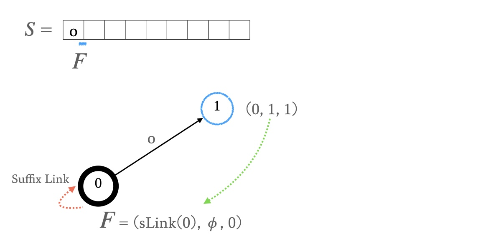
移動方法の説明に従うと、現在 \(u = 0,\mathrm{sLink}(u) = 0\) であり、経路 \(w\) は文字列 o で表されます。始点 \(u=0\) は根であるため、\(\mathrm{next}(F)\) は \(\mathrm{sLink}(0)\) から (空文字列) だけ移動した地点になります。
次に、\(S\) に push_back(k) を行います。手続きにある通り、辺 \((0-1)\) の辺ラベルに追記してから、前回同様に \(\mathrm{label}(F)+x\) に対応する葉を作成し \(F\) をそこに移動します。その後、上記と同様に \(\mathrm{next}(F)\) に移動します。
ラベルに追記する必要がある辺は \(O(|S|)\) 個存在するので、これらを愚直に更新すると push_back ごとに \(O(|S|)\) 時間かかってしまいます。よって、辺ラベルに対する追記を一括で行うデータ構造を辺ラベルに採用する必要があります。これは全く難しくないですが、今はややこしくなるので後で紹介します。
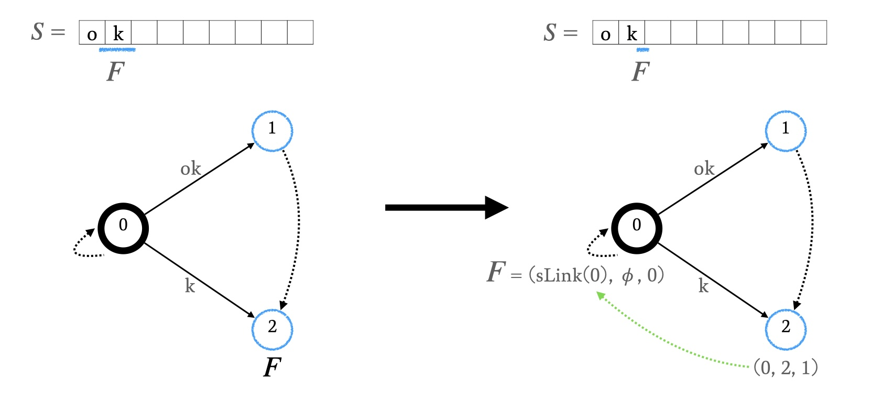
また、手続きに従いこれよりも前で最後に生成した葉ノードから、今作成した葉ノードに Suffix Link を繋げます。
次に、\(S\) に push_back(o) を行います。前回同様に辺ラベルに追記したのち、今後は \(\mathrm{label}(F)+\)o の位置が Suffix Tree に存在するので、\(F\) をそこに移動して手続きは終了になります。
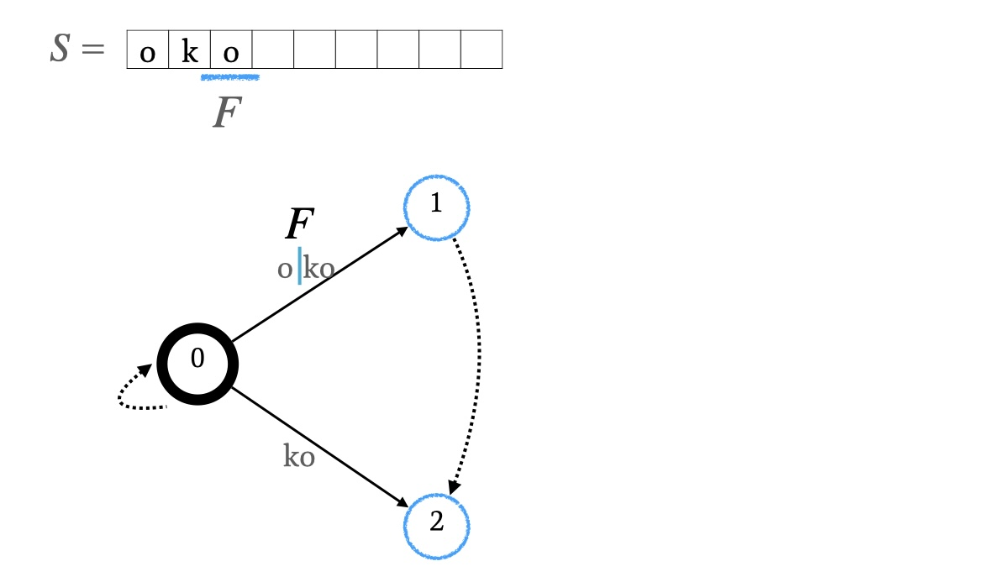
次に、\(S\) に push_back(o) を行います。今回は葉を作成するための分岐点を先に作成する必要があります。その後は同様に \(\mathrm{label}(F)+x\) に対応する葉を作成し \(F\) をそこに移動してから \(\mathrm{next}(F)\) を確認しますが、\(\mathrm{next}(F)\) を計算するために、今作成した分岐点の Suffix Link を構築する必要があります。
今作成した分岐点の Suffix Link 先は \(\mathrm{next}(F)\) の計算と同じような方法で計算できます。異なる点は、復元する移動経路の長さが \(1\) とは限らないことです。そして結論から言うと、今作成した分岐点の Suffix Link 先には、すでに頂点が存在するか、この直後に作成されることが言えます。詳しくは説明しませんが、これは \(F\) の定義などから説明できます。
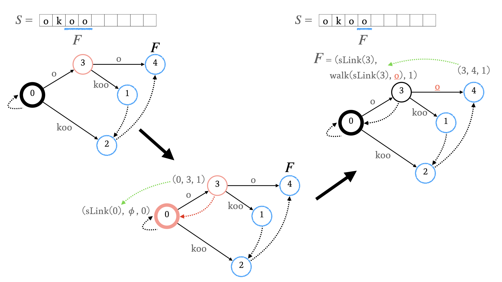
分岐点の Suffix Link を構築したのち、\(\mathrm{next}(F)\) を計算します。今回は \(u\) が根ではないので、\(\mathrm{next}(F)\) は \(\mathrm{walk}(\mathrm{sLink}(u),w)\) です。\(\mathrm{walk}\) は、\(\mathrm{label}\) や辺ラベルの長さ、移動経路の長さ、次に移動する方向(文字)を参照しながら計算することができます。
続けて、push_back(k), push_back(o), push_back(o) を行います。これらでは新たな葉ができることはなく処理が進みます。
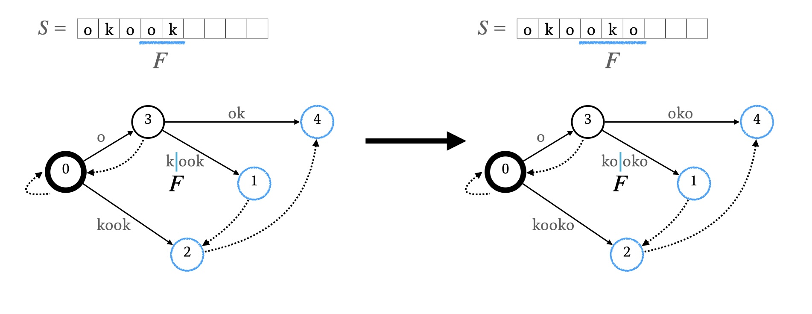
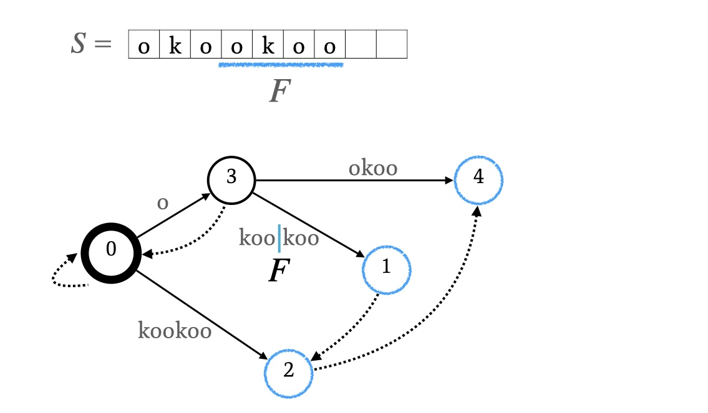
次に push_back(o) を行います。今回は分岐点を生成してから葉を生成します。
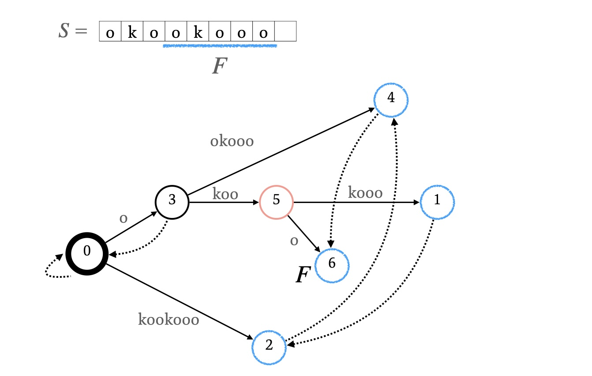
その後、\(\mathrm{next}(F)\) の計算のためにまず分岐点の Suffix Link を作ります。前述の手順で Suffix Link 先の位置を計算したところ、今回はその位置に頂点が存在しなかったため、その位置に新たに頂点を生成します。新たに頂点を生成した場合、\(\mathrm{next}(F)\) に対応する地点は Suffix Tree に存在せず、ここで作成された頂点はその直後に \(\mathrm{next}(F)\) に対応する葉の分岐点として使用されます (このことも \(F\) の定義から説明できます)。
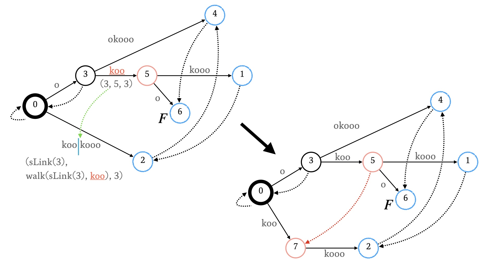
分岐点の Suffix Link (及びリンク先頂点) を生成したのち、\(F\) を \(\mathrm{next}(F)\) に移動させます。今回は \(\mathrm{next}(F)\) が Suffix Tree に存在しなかったため、対応する葉を新たに生成します。
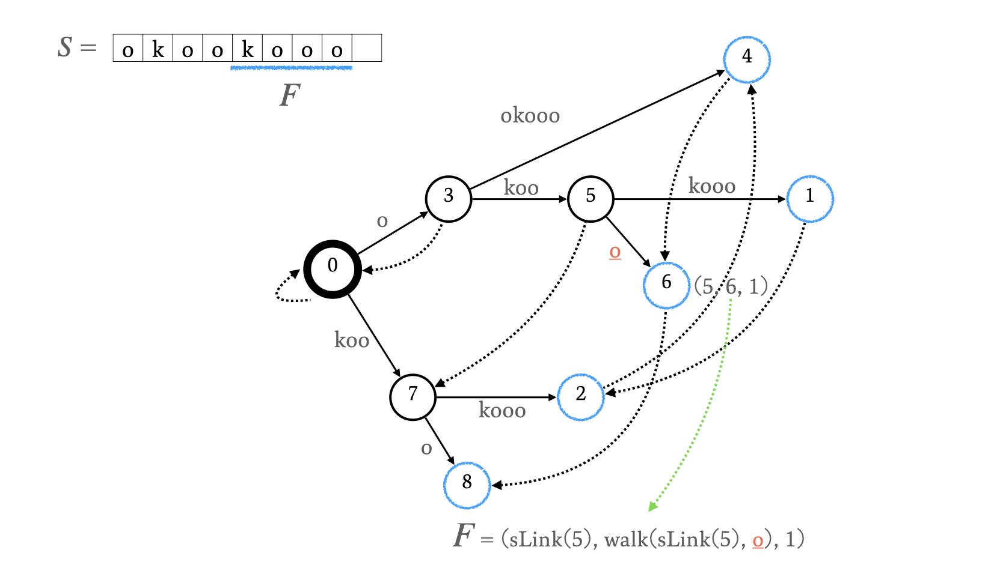
なおこの状態では \(F\) は \(F\) の定義を満たしません。手続きに従い、\(F\) が定義を満たすようになるまで \(\mathrm{next}(F)\) への移動を繰り返す必要があります。ここでも同様に、\(F\) に分岐する頂点の Suffix Link の構築から行う必要があります。
補足説明今回も \(\mathrm{walk}\) を計算する必要がありますが、今回はこれまでと異なり、\(\mathrm{walk}\) の移動先の復元が複数の辺にまたがっています。このような場合も、\(\mathrm{label}\) や辺ラベルの長さ、移動経路の長さ、次に移動する方向(文字)を参照しながら、移動先の計算を繰り返すことで、\(\mathrm{walk}\) を計算する必要があります。
このように \(\mathrm{walk}\) の計算は定数時間ではありませんが、Suffix Tree 構築全体を通して評価すると線形時間になることが言えます。照明は割愛しますが、\(\mathrm{walk}\) の計算内のイテレーション回数が増える条件を考えると証明できると思います。
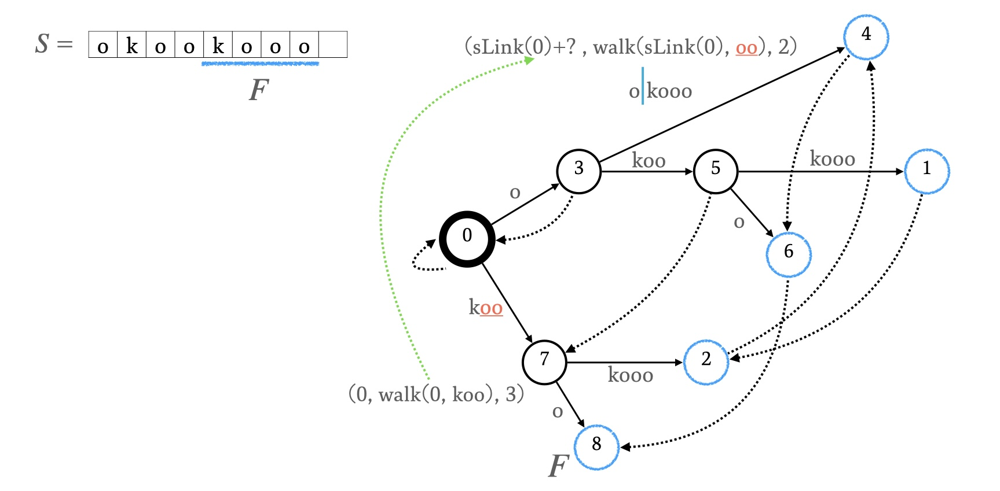
その後、同様に \(F\) を \(\mathrm{next}(F)\) に移動します。今回も対応する位置が存在しなかっため、新たに葉を生成してイテレーションを続行します。
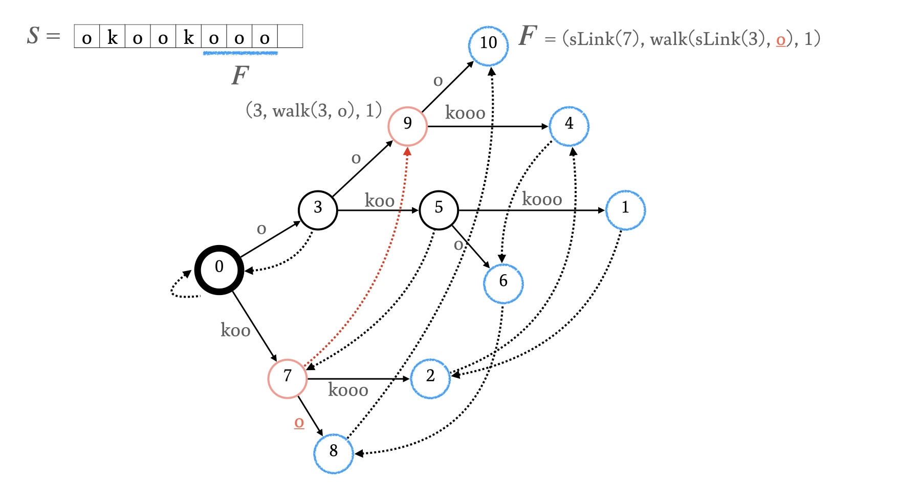
同様に \(F\) に分岐する頂点のリンク先を復元し、その後 \(\mathrm{next}(F)\) を探します。今回は \(\mathrm{next}(F)\) が Suffix Tree に存在するので、\(F\) を \(\mathrm{next}(F)\) に移動してイテレーションを終了します。
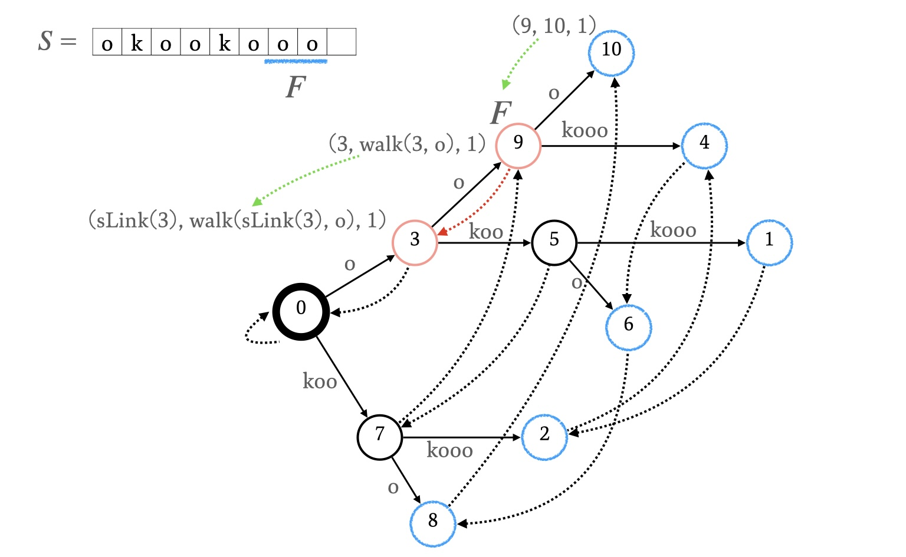
次に、push_back(k) を行います。今回は \(\mathrm{label}(F)+\)o の位置が Suffix Tree に存在するので、\(F\) をそこに移動して手続きは終了になります。
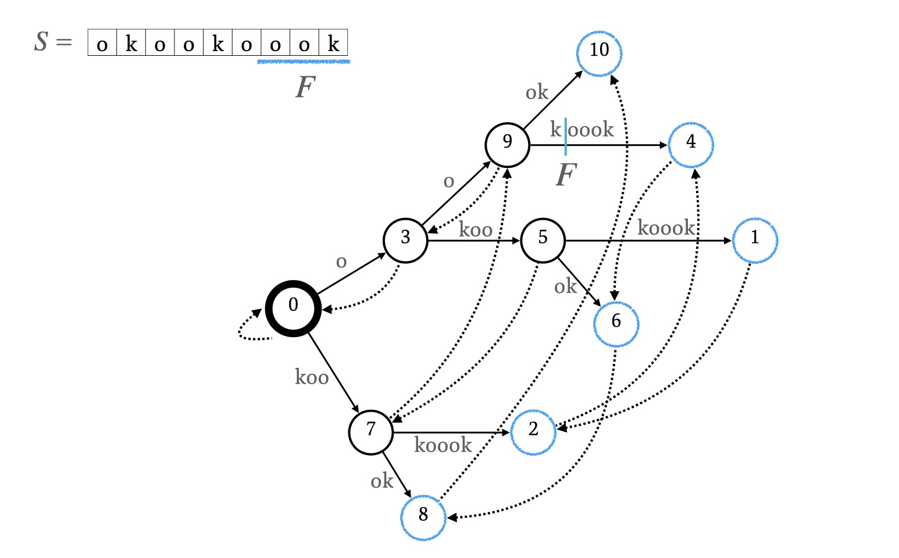
こうして、\(S = \) okookoook の Suffix Tree ができました。これは冒頭で示したものと一致することがわかります。
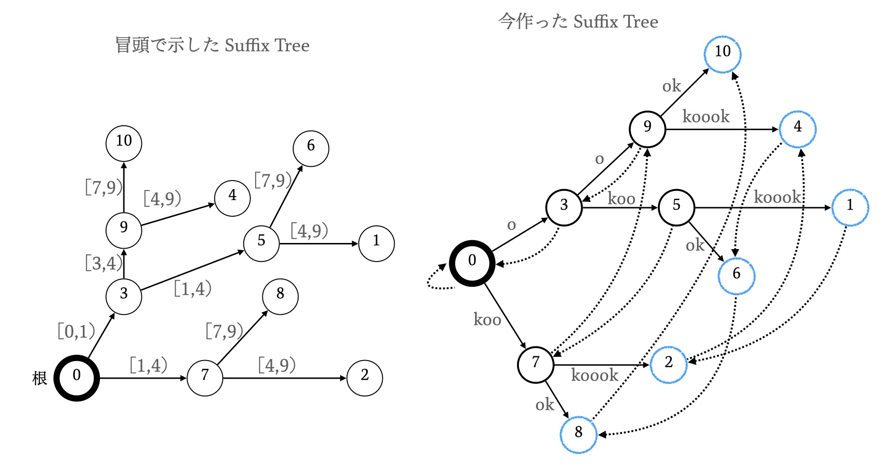
今後 \(S\) に push_back が行われないことが確定したら、この Suffix Tree を強い形に変形して、各接尾辞に対して対応する頂点を生成することができます。手続きは以下の操作を繰り返します。
suffix_id を、\(\mathrm{label}(F)\) に対応するものに更新する。
以下の図では、接尾辞 ook に対応する新たな頂点 \(11\) を生成します。Suffix Link などを構築してから、\(F\) を \(\mathrm{next}(F)\) に移動しています。
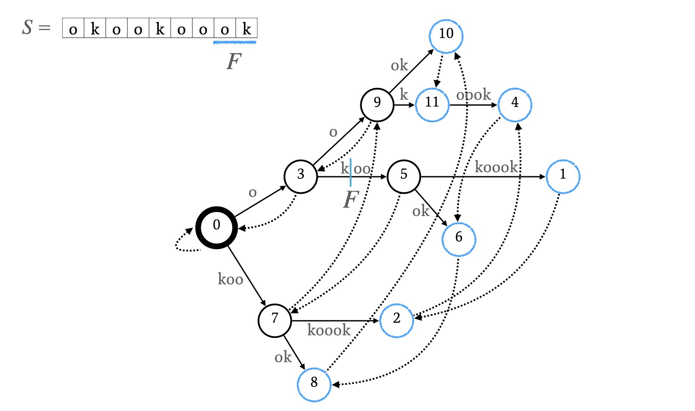
以降の手続きも同様です。
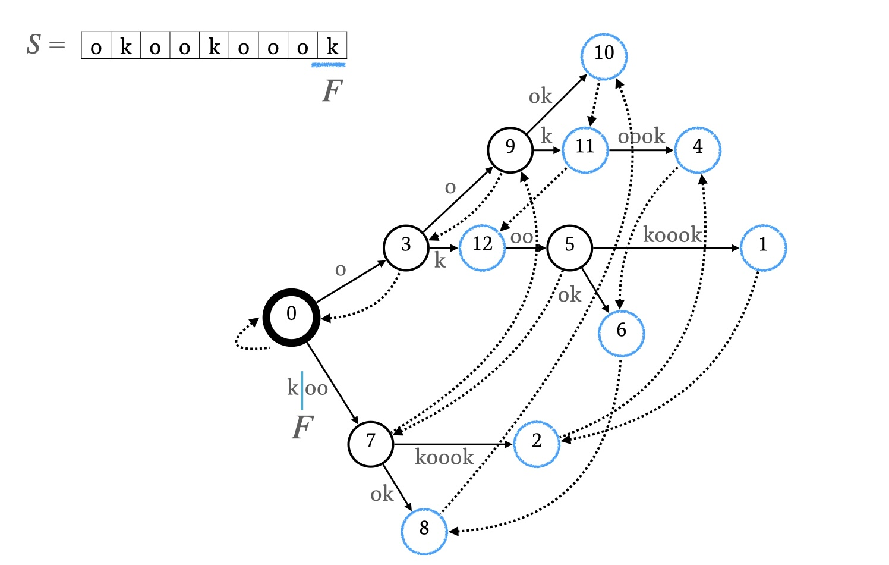
最後、根に到達したのでこれで手続きは終わりです。
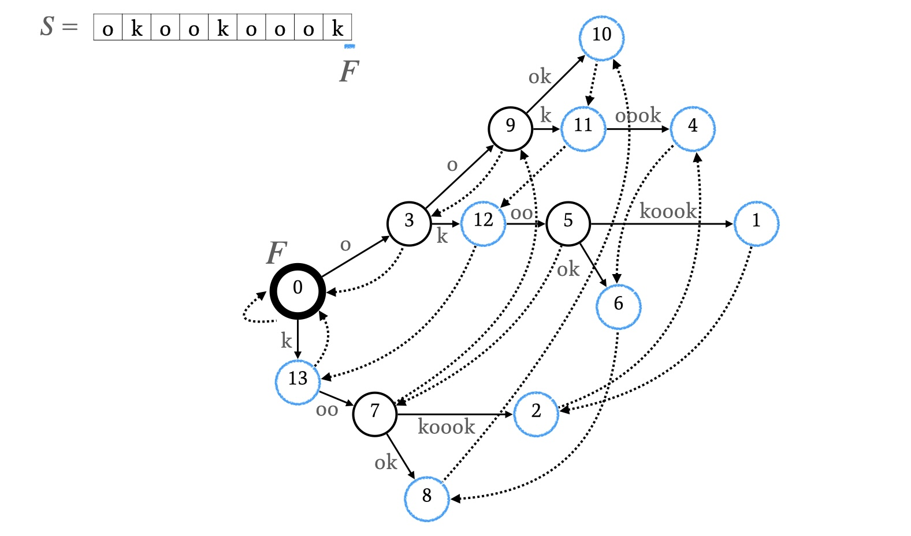
こうして構築した Suffix Tree は、それぞれの接尾辞が、対応する頂点を Suffix Tree 上に持つ強い形であることが確認できます。
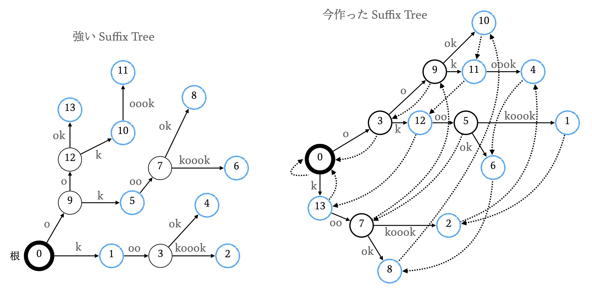
push_back の手続きで、Suffix Tree の既存の辺のラベルを一気に更新したいと説明しました。ここではそれを可能にするデータ構造を紹介します。とはいえ、とても簡単なのであとは消化試合です。
概要で説明した通り、Suffix Tree の辺は文字列 \(S\) の部分文字列の参照である半開区間を持ちます。
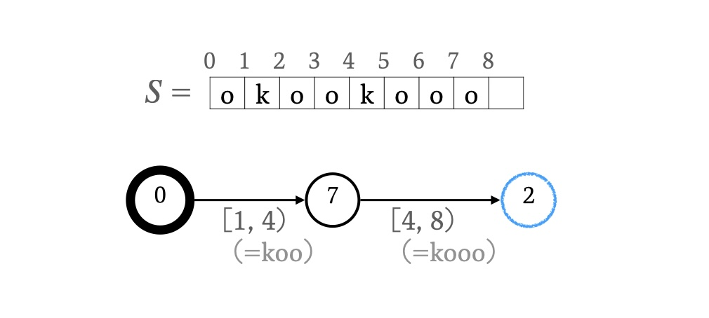
push_back で更新される辺ラベルの集合は、手続きより、半開区間の右端が \(S\) の終端であるものと一致します。そこで、\(S\) の終端を表す特殊なシンボルとして $ を採用します。
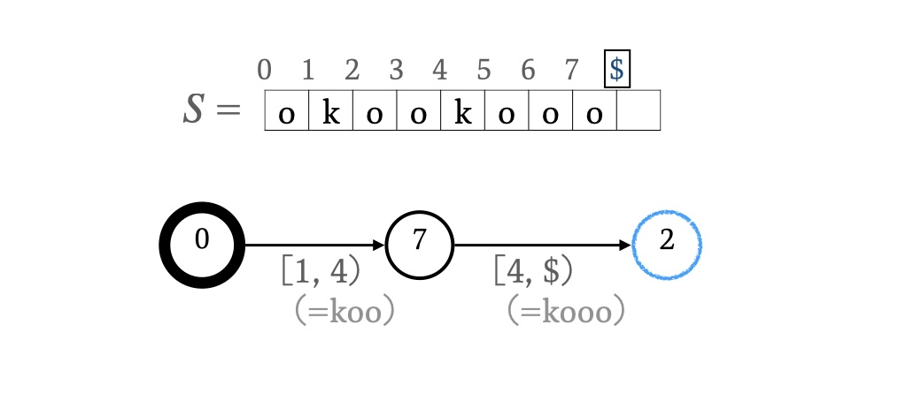
$ は論理的なシンボルであり、push_back を行った際に自動でその値(実体)が変化します。その結果、$ を右端に持つ辺ラベルは、push_back を行った際に自動的に右端の値(実体)が変化します。
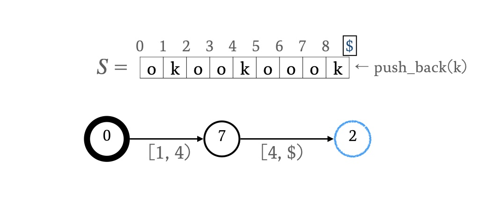
この $ は参照やポインタによって簡単に表現することができます。これにて、Suffix Tree を完璧に構築することができます。
Suffix Tree ライブラリをページ最下部のサンプルコード欄に掲載しています。ここでは、Suffix Tree ライブラリを用いて解くことができる問題の例を紹介します。
みなさんはローリングハッシュをご存知でしょうか。ローリングハッシュは文字列のハッシュ値を計算する手法で、その強みの一つとして、与えられた文字列の部分文字列に対するハッシュ値の計算が定数時間であることなどがあります。その反面、ハッシュ値への変換は単射でないため、ハッシュ値の一致判定結果が元の文字列の一致判定結果と 100% 一致すると言い切れない問題があります(ハッシュの衝突)。
もし、部分文字列を取りたい文字列群 \(S_1,S_2,\dots,S_N\) が予め分かっているならば、これらをすべて順に連結した文字列の Suffix Tree を構築することで、Suffix Tree 上の位置がこれらの文字列の部分文字列の符号になります。繰り返しですが、Suffix Tree 上の位置データは元の文字列の \(1\) 種類の部分文字列と一対一対応しています。\(S_1+S_2+\dots+S_N\) の部分文字列は、もともと取得する予定の部分文字列を含むため、\(S_1+S_2+\dots+S_N\) が一つの Suffix Tree を共有することで、Suffix Tree 上の位置データを共通の符号として使用できるようになります。
位置データ \((u,v,p)\) は \(3\) つの整数またはポインタのため、この符号のサイズは \(3\) words と小さいです。なお、\(S_1+S_2+\dots+S_N\) の半開区間 \([l,r)\) に対応する位置データは、\(l\) 文字目から始まる接尾辞に対応するノードから、親ノードに関するダブリングテーブルを用いて \(O(\log{\sum{{S_i}}})\) 時間で復元することができます。
この符号はクエリごとの符号化が高速かつ省メモリであることに加えて、ハッシュの衝突が発生しないという利点があります。ただしローリングハッシュとは異なり、文字列の連結結果のハッシュ値の定数時間の計算を行うことはできません。
根から「辺ラベルの先頭の文字の辞書順が小さい方向が優先の DFS」を行い、道中の終端ノードの suffix_id を順に格納すると Suffix Array ができます。こうしてできた Suffix Array の隣接頂点に対して、それらに対応する Suffix Tree のノードの LCA (Lowest Common Ancestor) を計算することで LCP Array が得られます。
Suffix Tree における LCA は、\(2\) つの位置データを受け取り、それらの共通祖先の位置データを返します。ここでは、必ずしも LCA は頂点になるわけではなく、辺ラベルの途中の位置なども LCA になり得ます。
Suffix Tree 上の \(2\) つの位置を選ぶことは、元の文字列の部分文字列から \(2\) つ選ぶことと対応します。それらの \(2\) つの LCA を取る操作は、\(2\) つの部分文字列の最長共通接頭辞を取得する操作に等しいです。このことを利用していくつかの有名問題を解くことができます。以下にいくつかの例を紹介します。
void Palindromes(){
string s;cin >> s;
string S = "?";
for(char c : s){
S += c;
S += '?';
}
string rS = S;
reverse(rS.begin() , rS.end());
// [ S , 仕切り , S の逆順 ] を入れる
SuffixTree<long long, false> T;
T.build(S+"$"+rS);
for(int i = 0 ; i < int(S.size())-2 ; i++){
decltype(T)::TreePlace n1 = T.search(i+2, S.size()+1); // 前半の部分文字列 (最後まででも別に良いが、search のデバッグを兼ねる)
decltype(T)::TreePlace n2 = T.search(T.size()-i-1, T.size()); // 後半の部分文字列
decltype(T)::TreePlace lca = T.LCA(n1,n2);
int r = lca.path_label_length();
if((i+2)%2 == 0){
r = (r-1)/2 + 1;
r = (r-1)*2 +1;
}
cout << r << " ";
}
cout << endl;
有名というわけではありませんが、Suffix Link を用いて \(2\) つの文字列 \(S, T\) に対して以下のデータを計算することができます。
これは、Aho-Corasick 法と同様に、行き止まりに到達したら Suffix Link を辿って次の接尾辞に移動する手法で計算することができます。具体的には、\(S\) の Suffix Tree の根から \(T\) に沿って移動を行い、移動できた深さから最長共通接頭辞を求めます。はじめは、\(\mathrm{ms}[0]\) の計算から始まります。移動ができない地点に到達したらこれ以上長い共通接頭辞は存在しないことが言えるので、Suffix Link を移動することで \(T\) の次の接尾辞の \(\mathrm{ms}\) の計算に移行します。
コード例vector<int> matching_statistics(string s , string t){
SuffixTree<char> T;
vector<int> ms(t.size() , 0);
T.push_back(s);
auto now = T.from_root(false);
int r = 0;
for(int i = 0 ; i < t.size() ; i++){
r = max(i,r);
while(r < t.size() && T.walkdown(now,t[r]))r++;
ms[i] = now.path_label_length();
// 位置データと対応する列が非明示の場合は、引数に渡す
now.walkSuffixLink(t,i);
}
return ms;
}
何度でも言いますが、\(S\) の Suffix Tree は \(S\) のすべての種類の部分文字列を論理的に列挙します。ただし \(|S|\) の部分文字列の種類数は \(O(|S|^2)\) 個存在するため、すべての種類の部分文字列に対して何かを計算したい場合は、\(O(|S|^2)\) 個の部分文字列から集約できる何らかのデータを集約する必要があります。集約の方法は部分木に注目して木 DP を行うなり、辺ラベルの区間データに注目して何らかのデータ構造を作るなり様々です。
例えば、ある部分木に対して「その部分木以降の位置データの種類数」を木 DP で集約しておけば、辞書順で \(x\) 番目の部分文字列を \(O(|S|\log{\sigma})\) 時間で特定することができます。
また部分文字列の文脈とは関係なしに、データの集約によって様々な問題を解くことができます。例えば Overview で紹介した Longest Common Substring の問題は、\(2\) つの文字列 \(S,T\) を、いずれにも登場しない文字 \(\overline{c}\) を挟んで連結した文字列の Suffix Tree において、以下の \(2\) つの DP テーブルを構築することで解くことができます。
void LongestCommonSubstring(){
string s , t;cin >> s >> t;
SuffixTree<char,false> T,SS;
T.build(s+"?"+t);// s + ? + t を入れる
vector<int> dp_s(T.tree_size() , 0);// [x] := 頂点 x の部分木に s の 終端ノード が存在するか
vector<int> dp_t(T.tree_size() , 0);// [x] := 頂点 x の部分木に t の 終端ノード が存在するか
auto dfs = T.dfs();
reverse(dfs.begin() , dfs.end());
for(auto now : dfs){
if(now->isEndPoint()){
if(now->suffix_id == s.size())continue;
if(now->suffix_id < s.size())dp_s[now->id] = 1;
else dp_t[now->id] = 1;
}
if(now->parent != nullptr)dp_s[now->parent->id] += dp_s[now->id];
if(now->parent != nullptr)dp_t[now->parent->id] += dp_t[now->id];
}
string ans = "";
const decltype(T)::Node* best = T.get_root();
for(auto now : dfs){
if(dp_s[now->id] == 0 || dp_t[now->id] == 0)continue;
if(best->path_label_length() < now->path_label_length())best = now;
}
while(best!=nullptr){
string tmp = "";
for(int i = best->cleft(); i < best->cright() ; i++)tmp += T[i];
reverse(tmp.begin(),tmp.end());
ans += tmp;
best = best->parent;
}
reverse(ans.begin(),ans.end());
if(ans.size() == 0){
cout << "0 0 0 0" << endl;
return;
}
// メモリ解放 & 再利用
T.clear();
T.build(t);
SS.build(s);
// 接尾辞のうち、ans を含むものの開始位置
decltype(SS)::TreePlace ps = SS.search(ans);
decltype(T)::TreePlace pt = T.search(ans);
int a = SS.decode_suffix(ps);
int c = T.decode_suffix(pt);
cout << a << " " << a + ans.size() << " " << c << " " << c + ans.size() << endl;
木に関する一般的なテクニックとして、いくつかの箇所に遅延評価を載せておき、DFS の際に木全体に降ろして作用させるというものがあり、Suffix Tree も例に漏れずこのテクニックを使うことができます。Overview で紹介した ABC268-Ex (2560 diff) も、Suffix Tree 上に遅延評価を持たせて最後にまとめて作用させることで、答えを導き出すために必要なデータを構築することができます。
この問題の概要は、\(N\) 個の文字列 \(T_1,T_2,\dots,T_N\) のすべてが文字列 \(S\) の部分文字列にならないように、文字列 \(S\) の文字を * で置き換える際の最小置き換え回数を求めるというものです。突飛ですが、この問題は以下のデータを用意することで解くことができます。
* の位置として許容できる箇所の最大値
* が登場する必要がない部分については未定義とする。
すべての \(i\) について、\(T_i\) に対応する箇所に値 \(|T_i|\) を記録しておくことで、DFS の際にこれらの値との min を作用させながら値を集約し、終端ノードに到達したタイミングで集約した値から \(\mathrm{interval\_right}\) の値を計算することができます。
このように構築した \(\mathrm{interval\_right}\) は、未定義である部分以外はすべて * が登場するべき index の制約を表しています。すなわち、\(\mathrm{interval\_right}\) によって定義される未定義でない区間全てについて、それぞれの区間内に少なくとも \(1\) つは * が登場する必要があります。このとき、* に置き換える必要がある文字の最小個数は 区間スケジューリング問題 に帰着することができます。
template<typename T>
int RangeSchedulingProblem(vector<pair<T,T>> intervals){
int res = 0;
if(intervals.empty())return res;
sort(intervals.begin(),intervals.end(),[](auto a, auto b){return bool(a.second < b.second);});
int right = intervals.front().first;
for(auto x : intervals){
if(right <= x.first){
res++;
right = x.second;
}
}
return res;
}
int main(){
SuffixTree<char,false> T;
string s;
cin >> s;
T.build(s);
// [x] := 頂点 x にかかる遅延評価 (禁止する部分文字列の長さ)
// 「*」の位置として許容できる箇所が狭まるので、min で集約する
vector<int> lazy_op(T.tree_size(),s.size()+1);
int q;
cin >> q;
for(int i = 0 ; i < q ; i++){
string t;cin >> t;
if(T.find(t) == false)continue;
auto place = T.search(t);
if(place.to == nullptr)lazy_op[place.from->id] = min(lazy_op[place.from->id], int(t.size()));
else lazy_op[place.to->id] = min(lazy_op[place.to->id], int(t.size()));
}
// [i] := i 文字目以降で * が登場する必要がある箇所の制約を表す半開区間の右端
vector<int> interval_right(s.size(),0);
auto dfs = T.dfs();
for(auto x : dfs){
// 評価を下に降ろす
if(x->parent != nullptr){
lazy_op[x->id] = min(lazy_op[x->id], lazy_op[x->parent->id]);
}
if(x->is_root())continue;
if(x->isEndPoint()){
interval_right[x->suffix_id] = x->suffix_id + lazy_op[x->id];
}
}
vector<pair<int,int>> intervals;
for(int i = 0 ; i < s.size() ; i++){
if(i >= interval_right[i])continue;
if(interval_right[i] > s.size())continue;
intervals.push_back({i,interval_right[i]});
}
cout << RangeSchedulingProblem<int>(intervals) << endl;
return 0;